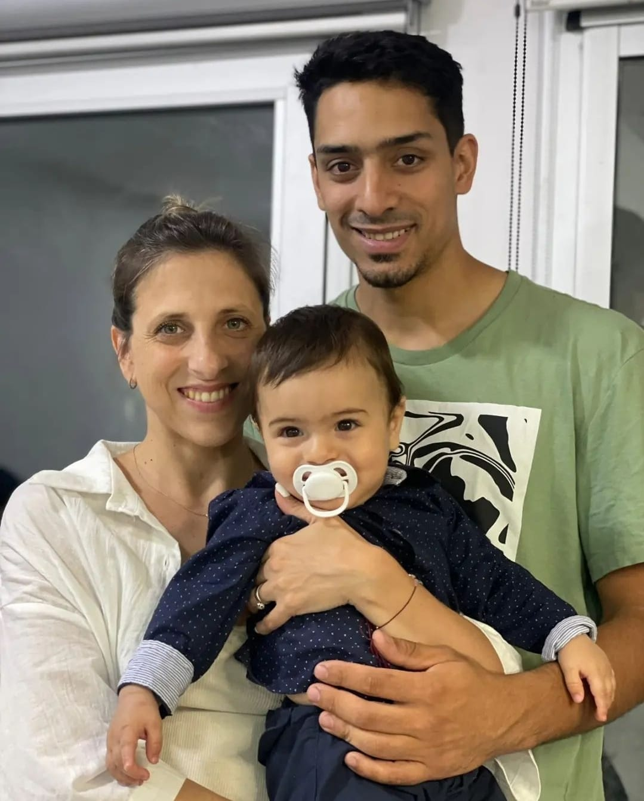

<!doctype html>
<html lang="en">
    <head>
        <meta charset="UTF-8">
        <meta name="viewport" content="width=device-width, initial-scale=1.0">
        <title>Contacto - Mi Casa Muebles</title>
    
        <link rel="stylesheet" href="../css/style.css">
    </head>
</html>


<!DOCTYPE html>
<html lang="es">
<head>

    <meta charset="UTF-8">
    <meta name="viewport" content="width=device-width, initial-scale=1.0">
    <title>Mi Casa Muebles</title>

    <link rel="stylesheet" href="./css/style.css">

    
</head>
<body class="tipografia">
    
    <header id="top"> 
        
        <nav>
           
                <a href="./index.html" class="quienes-somos">Quienes somos</a>
            
               <a href="./pages/como-trabajamos.html" class="como-trabajamos">Como trabajamos</a>
            
                <a href="./pages/donde-estamos.html" class="donde-estamos">Donde estamos</a> 
            
                <a href="./pages/preguntas-frecuentes.html" class="preguntas-fecuentes">Preguntas frecuentes</a> 
            
               <a href="./pages/contacto.html" class="contacto">Contacto</a>
            

        </nav>
    </header>

    <main>
        <h1>Mi Casa Muebles</h1>
        <h2>Quienes somos</h2>

        <p>Somos un grupo de jóvenes emprendedores apasionados por ayudarte a armar la casa de tus sueños. Con 8 años de experiencia en el rubro, fabricamos muebles a medida utilizando materiales de alta calidad como madera, melamina y lacados. Nuestro equipo está compuesto por cuatro especialistas: un carpintero, un laqueador, un armador y un asesor de clientes. Juntos, trabajamos con un objetivo común: hacer realidad los sueños de nuestros clientes a través de muebles personalizados y de alta calidad.</p>
    </main>
    <h3>Nuestros servicios</h3>
    <ul>
        <li>Muebles a medida: Diseñamos y fabricamos muebles personalizados que se adaptan a tus necesidades y gustos.</li>
        <li>Materiales de calidad: Utilizamos madera, melamina y acabados lacados para garantizar la durabilidad y la estética de nuestros productos.</li>
        <li>Equipo especializado: Contamos con un equipo de profesionales dedicados a cada etapa del proceso de fabricación, desde la carpintería hasta el laqueado, montaje y asesoramiento.</li>

 <h4>Nuestro compromiso</h4>
        <p>En cada proyecto, nos comprometemos a escuchar tus ideas y necesidades para crear muebles que reflejen tu estilo y personalidad. Nuestra misión es que el resultado final de cada mueble sea exactamente lo que has soñado.

        </p>

    </ul>

    <section class="dueños"></section>
    
    <footer>
        
    <H5>Contacto</H5>
        <p><a href="https://api.whatsapp.com/send?phone=541159134918&text=Hola!%20queria%20solicitar%20un%20presupuesto%20" target="_blank">Whatsapp</a>
        <a href="https://www.instagram.com/mi_casamuebles/" target="_blank">Instagram</a>
        <a href="https://www.facebook.com/Mueblesmicasa1/" target="_blank">Facebook</a></p>
        <a href="#top"> IR ARRIBA     </a>

        
    </footer>
    <section class="wpp"> </section>

</body>
</html>

